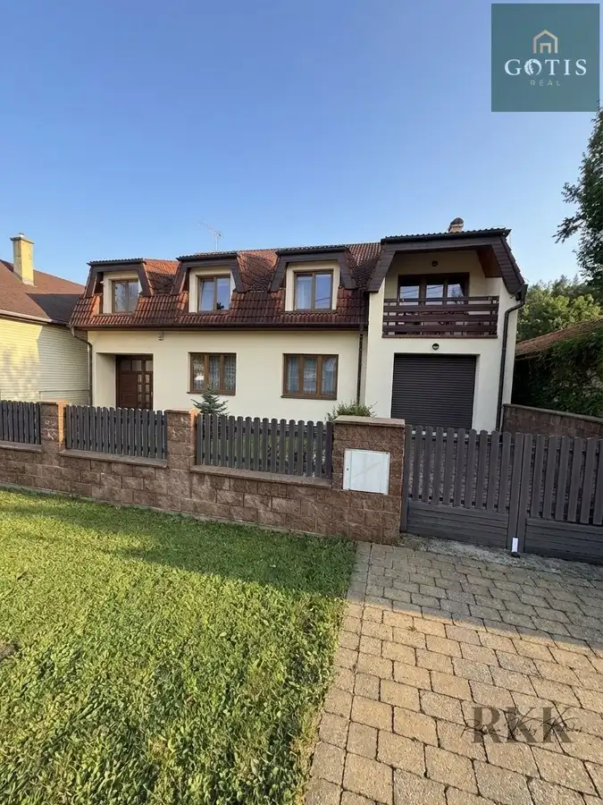
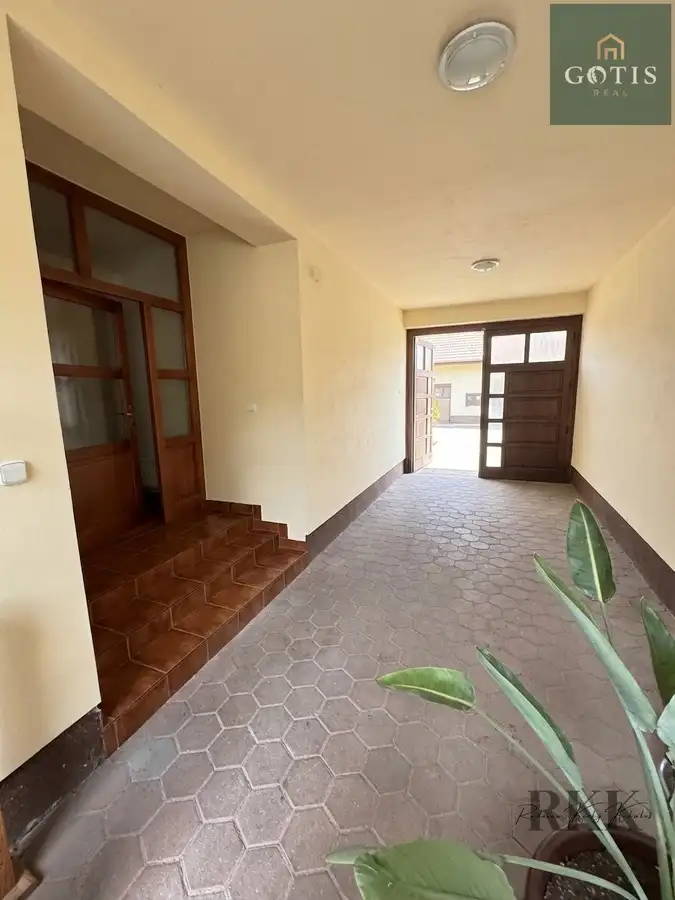
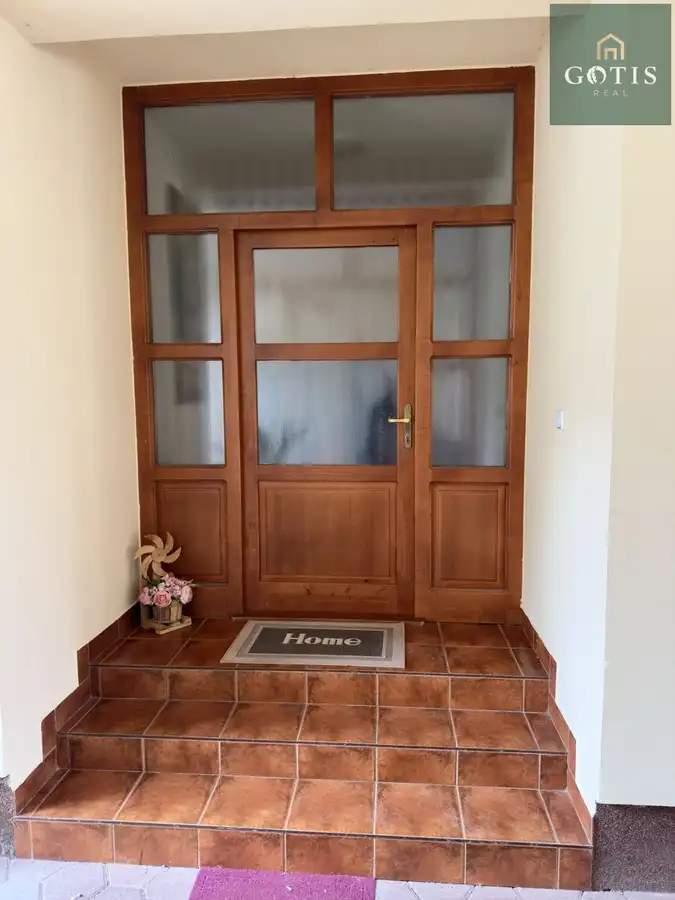
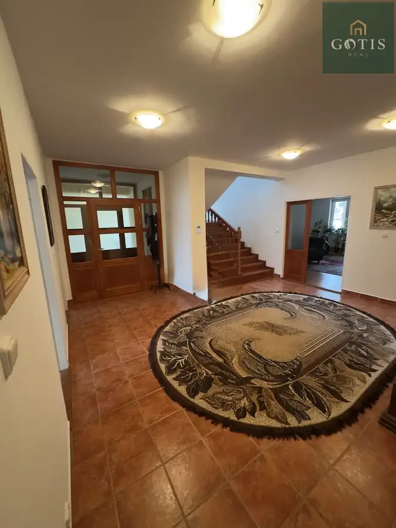

Exkluzívna vila s podnikateľským potenciálom-Košice,Myslava – Pod Hrabinou
Myslava, Košice




- Plocha541 m²
- StavPôvodný stav
- VlastníctvoOsobné
O nehnuteľnosti
Predstavujem vám výnimočnú nehnuteľnosť v jednej z najpokojnejších a najvyhľadávanejších častí Košíc – Myslava, slepá ulica Pod Hrabinou. Luxusný, priestranný rodinný dom s veľkorysou výmerou je ideálny nielen na komfortné rodinné bývanie, ale aj ako reprezentatívne sídlo firmy, klinika, advokátska kancelária, školiace centrum či kombinácia bývania a podnikania.⸻ZÁKLADNÉ ÚDAJE•Pozemok: 1 177 m²•Zastavaná plocha: 276 m²•Úžitková plocha:•Prízemie: 231 m²•Poschodie: 231 m²•Podkrovie: 79 m²•Kolaudácia: 11/2001•Rozmer domu: 16 m x 17,3 m•Rozmer pozemku: šírka 17 m (zadná časť 10 m), dĺžka 83 mNa pozemku sa nachádza:•Rodinný dom•Záhradný domček (čiastočne podpivničený – 20 m² + 36 m²)•Terasa za domom: 39 m²⸻DISPOZÍCIA – DVE PLNODNOTNÉ PODLAŽIAPrízemie:•2 samostatné izby•Priestranná obývacia izba•Kuchyňa s jedálňou•Komora•Kúpeľňa + WC•Technická miestnosť•Garáž s elektrickou bránou a priamym vstupom do domuPoschodie:•Obývacia izba•Kuchyňa s jedálňou•4 samostatné izby•Komora•Kúpeľňa + WC•Chodba•Loggia•PráčovňaPodkrovie:•Miestnosť pripravená na saunu•IzbaDispozícia umožňuje jednoduché rozdelenie na dve samostatné bytové jednotky alebo oddelenie podnikateľskej časti od súkromnej.⸻TECHNICKÉ PARAMETRE A ŠTANDARD•Tehlová stavba (40 cm)•Strecha: pálená škridla Bramac•Plastové okná (dvoj- a trojsklo)•Interiérové dvere z tvrdého dreva•Schodisko – červený smrek (masív)•Veľkoplošné parkety v izbách•Keramická dlažba v chodbách a kuchyniach•Kúpeľne s vaňou aj sprchovým kútom•Dve plne vybavené kuchyne (plynový sporák, elektrická rúra, chladnička s mrazničkou, digestor, umývačka riadu)•Klimatizovaný dom•Ústredné vykurovanie – podlahové teplovodné + radiátory•Plynový kotol BOSCH (2024)IS: kanalizácia, plyn, obecná voda, studňa, elektrina.⸻PARKOVANIE•1 miesto v garáži•2 parkovacie miesta na spevnenej ploche na pozemku•2 parkovacie miesta pred domomIdeálne riešenie pre väčšiu rodinu, klientelu alebo zamestnancov.⸻LOKALITAPokojná a tichá slepá ulica zaručuje maximálne súkromie, bezpečie a komfort. Myslava patrí medzi najobľúbenejšie rezidenčné lokality v Košiciach – výborná dostupnosť do centra mesta, no zároveň kontakt s prírodou.⸻PREČO TÁTO NEHNUTEĽNOSŤ?✔ Nadštandardná výmera✔ Možnosť kombinácie bývania a podnikania✔ Dve kuchyne – ideálne pre dvojgeneračné bývanie✔ Reprezentatívny charakter stavby✔ Kompletné inžinierske siete✔ Pokojná a prestížna adresaTáto nehnuteľnosť je výnimočnou investíciou – či už hľadáte komfortné rodinné sídlo, alebo reprezentatívny priestor pre vaše podnikanie.V prípade záujmu o osobnú obhliadku ma neváhajte kontaktovať. Takéto príležitosti sa objavujú len zriedka0911 142 180 alebo radovan.kakulos@gmail.com
Parametre
- Druh
- Rodinný dom
- Druh domu
- Klasický dom
- Dátum zverejnenia
- 17. 02. 2026
- Energetický certifikát budovy
- nie je
- Plocha pozemku
- 1177 m²
- Počet nadzemných podlaží
- 2
- Stav nehnuteľnosti
- Pôvodný stav
- Terén pozemku
- Iný
- Typ
- Predaj
- Typ konštrukcie
- Tehlová
- Vlastníctvo
- Osobné
- Zariadenie
- Zariadené kompletne
- Zastavaná plocha
- 276 m²
- Úžitková plocha
- 541 m²